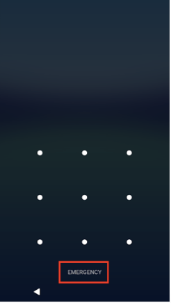
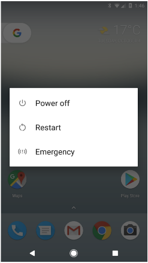

In this document
All mobile devices sold in India from the 1st January 2017 will need to provide a panic button to meet Indian Department of Telecommunications (DoT) requirements.
An Emergency Affordance feature has been developed to provide a reference implementation of the panic button for Android devices to address these regulatory requirements. This will be enabled by default in future Android releases but must be patched into existing builds. Currently, this feature is exclusively targeted at devices that are sold in the Indian market but can be included on all devices sold throughout the world as the feature has no effect outside India.
Examples and source
The Emergency Affordance feature is implemented in the Android Open Source Project (AOSP) frameworks/base project. It is available in the master branch and will be enabled by default in future Android releases.
This feature is currently available in the following branches and commits. This information is provided to enable device manufacturers to easily patch the necessary changes into their existing builds. Device manufacturers wanting to implement the AOSP reference emergency affordance feature can cherry-pick the commits from the applicable branches into their own builds.
Table 1. Cherry-picks for AOSP reference emergency affordance feature
| Branch | Commits |
|---|---|
| master | e0c3c66
Added Emergency affordance feature 42a4338 Added translations for emergency action string 4df8d64 Fixed an issue where the emergency affordance would show on tablets |
| nougat-dev | e6680d9
Added Emergency affordance feature 95e1865 Added translations for emergency action string a70bb89 Fixed an issue where the emergency affordance would show on tablets |
| marshmallow-dev | cd22634
Added Emergency affordance feature 13f51c6 Added translations for emergency action string 6531666 Fixed an issue where the emergency affordance would show on tablets |
| lollipop-mr1-dev | 5fbc86b
Added Emergency affordance feature 1b60879 Added translations for emergency action string d74366f Fixed an issue where the emergency affordance would show on tablets |
Implementation
The Emergency Affordance feature
makes no changes to the APIs exposed through the Android SDK. When enabled and
activated, it provides two triggers that can initiate an emergency call to
112, which is the single emergency number to be used in India and mandated by
the DoT regulations.
An emergency call is initiated by either:
- Long pressing the EMERGENCY button on the lockscreen (Figure 1)
- Tapping the Emergency option from the Global Action Menu (Figure 2), accessed by long pressing the power key.
| 
Figure 1. Long press the EMERGENCY button, highlighted with a red box, on the lock screen. |

Figure 2. Tap the Emergency action item on the Global Action Menu. |
This feature introduces the following internal components:
- EmergencyAffordanceManager
frameworks/base/core/java/com/android/internal/policy/EmergencyAffordanceManager.java - EmergencyAffordanceService
frameworks/base/services/core/java/com/android/server/emergency/EmergencyAffordanceService.java
EmergencyAffordanceManager
The EmergencyAffordanceManager provides an internal API to use the Emergency Affordance feature. It provides methods for initiating the emergency call and querying at runtime if the feature should be enabled.
void performEmergencyCall()- Initiates an emergency callboolean needsEmergencyAffordance()- Determines if the feature should be active
The feature may be permanently disabled at build
time by changing the EmergencyAffordanceManager.ENABLED constant
to false. This will cause needsEmergencyAffordance()
to always return false and prevent the EmergencyAffordanceService
from starting.
EmergencyAffordanceService
The
EmergencyAffordanceService is a system service that monitors the
Mobile Country Code (MCC) of all the detected cellular networks and the MCC of
the installed SIM cards. If any of the installed SIM cards or detected cellular
networks have a MCC matching one of India's MCCs (404,405) then the feature
will be enabled. This means the feature can be enabled in India even if no SIM
card is present. It is assumed the mobile network will permit registration for
emergency calls even without a SIM card installed. The feature will remain
enabled until a non-India SIM is installed and none of the detected networks
have a matching MCC.
The following resources and settings affect the behavior of the Emergency
Affordance feature. If the config type is "Resource" it is an internal resource
defined in frameworks/base/core/res/res/values/config.xml. If
config type is "Setting" it is a setting stored in the systems settings
provider.
Table 2. Settings affecting behavior of emergency affordance feature
| Config Type | Name | Description |
|---|---|---|
| Resource | config_emergency_call_number | The phone number that is automatically dialed when the emergency call is
initiated. Type: String Default: 112 |
| Resource | config_emergency_mcc_codes | An array of Integers listing the MCCs the feature should be active in. Type: Array of Integers Default: {404,405} |
| Setting | emergency_affordance_number | Global setting override with the number to call with the emergency
affordance. This will only have an effect on debuggable build images (ie. build
type is userdebug or eng). This is intended only for testing. Type: String Default: unset |
| Setting | force_emergency_affordance | Global setting, whether the emergency affordance should be shown regardless
of device state. This is intended only for testing. Type: Boolean (1 or 0) Default: unset --> 0 |
Enable emergency calls to '112'
The emergency affordance
feature connects the call using the emergency dialer so that the call can be
connected when the lock screen is active. The emergency dialer only connects
calls to the list of numbers provided by the Radio Interface Layer (RIL),
through the system property 'ril.ecclist', when no SIM is installed and
'ril.ecclist<SimSlotNumber>' when a SIM is inserted
and <SimSlotNumber> is the slot ID of the default
subscriber.
Device manufacturers using the emergency affordance feature
must ensure that devices in India always enable 112 as an emergency number in
the RIL.
Validation
While testing, on a debuggable build, the number that is called can be changed with the following command:
$ adb shell settings put global emergency_affordance_number <number_to_call>
Although this setting can be set on a normal user build, it will be ignored. To actually connect the call the number must be in the list of emergency numbers provided by the RIL. This can be temporarily set using the following command executed from a root shell on a userdebug device:
$ setprop ril.ecclist "$(getprop ril.ecclist),<number_to_call>"
The following command can also be used to force the Emergency Affordance feature to be enabled even in the absence of an Indian mobile network being detected or an Indian SIM card being inserted.
$ adb shell settings put global force_emergency_affordance 1
During testing it is recommend that at least the following cases are tested.
- Once activated, long pressing the EMERGENCY button on the lockscreen (Figure 1) initiates a call the specified emergency number.
- Once activated, the Emergency item on the Global Action Menu is present and that tapping it initiates a call to the specified emergency number.
- The feature is not activated in the absence of a detected Indian Mobile Network with a non-India SIM card installed.
- The feature is activated on the device whilst an Indian SIM card is installed, regardless of the detected mobile networks.
- The feature is activated on the device whilst an in the presence of a Indian Mobile Network regardless of the SIM cards installed.
If a device includes supports multiple SIM cards then testing should ensure that the SIM MCC detection works correctly in each SIM slot. The feature is not governed by Android compatibility, so there are no CTS tests for it.
Frequently Asked Questions
Q. The emergency number '112' has not been commissioned yet in India, should it still be used?
'112' is the number that will be used in India as the Public Safety Answering Point (PSAP) as defined by the Integrated Emergency Communications and Response Systems (IECRS). Until the PSAP is commissioned all calls to '112' will be routed to the existing '100' emergency number.
Q. What about other triggers like "triple" pressing the power button?
Device manufacturer may choose to implement additional triggers. Triple tapping the hardware power button is also an approved trigger action by the India DoT. However, this trigger is not supported in the AOSP reference implementation as a number of other widely used applications use the power button gestures, including repeated tapping of the power button. These applications might interfere with the emergency dialer, or the user may accidentally trigger the panic button while trying to trigger actions in these applications.